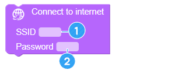
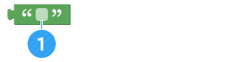

Menari seperti idola
• Memahami 1: 1 dan 1: n metode pengendalian
• Buat program yang dapat mengontrol beberapa AsomeBots secara bersamaan.
• Hubungkan berbagai gerakan dansa dan kembangkan program tari baru.
A. Biarkan robot menari seperti idola.
Anda dapat menggunakan fungsi WiFi AsomeBot untuk membuat beberapa robot menari secara bersamaan.
Cara mengirim sinyal melalui WiFi
① operasi 1: 1
Hubungkan ponsel cerdas Anda dan AsomeBot untuk beroperasi satu per satu.

② Operasikan beberapa robot sekaligus
Setelah smartphone mengirim sinyal ke router, router mentransmisikan sinyal ke beberapa AsomeBots untuk operasi.

B. Bagaimana Anda membuat gerakan tari?
Anda dapat membuat berbagai gerakan dengan menyesuaikan sudut dan waktu bergerak dari 4 motor yang terhubung ke AsomeBot. Anda dapat membuat gerakan mengibaskan kaki sebagai berikut:
C. Saya ingin robot saya melakukan gerakan yang berbeda secara bersamaan.
Seperti idola, terkadang Anda hanya perlu menyimpan gerakan berbeda saat Anda ingin setiap AsomeBot menari gerakan yang berbeda.
Dalam urutan apa Anda harus membangun sebuah program?
① Biarkan AsomeBot untuk mengakses router Internet.
② Kembangkan gerakan tarian untuk setiap robot.

③ Operasikan dengan satu smartphone.
A. Terhubung ke internet/connect to internet (grup [INTERNET])
Tentukan nama dan kata sandi router nirkabel tempat AsomeBot akan terhubung.Untuk menggunakan blok, Anda harus memiliki router Internet nirkabel. Namun, router Internet tidak perlu terhubung ke Internet.
① Masukkan nama router Internet.
② Masukkan kata sandi router Internet.
Temukan router Internet di ponsel cerdas Anda. Anda dapat menemukan nama router nirkabel yang ingin Anda gunakan dalam daftar WiFi dan terhubung ke ponsel cerdas Anda. Jika sebuah pesan muncul karena koneksi Internet tidak stabil, jangan tekan tombol apa pun dan tunggu pesannya menghilang.

B. Buka/open socket UDP (grup [INTERNET])
AsomeBot membuka port untuk berkomunikasi melalui Internet.

① Nomor port yang akan digunakan. Gunakan nomor sebagaimana adanya tanpa modifikasi.
C. Baca Pesan/read message (grup [INTERNET])
Baca pesan yang dikirim dari smartphone.

D. Ulangi hingga tak terbatas/repeat infinitely (grup [ADVANCE])
Blok di dalam blok ini akan dijalankan secara berurutan dan berulang tanpa henti. Di sini, Anda akan menunggu Aplikasi ponsel cerdas Anda untuk mengirim pesan, dan menjalankan perintah sesuai dengan pesan tersebut.

E. Ulangi/repeat (grup [ADVANCE])
Ulangi perintah di blok sebanyak yang Anda inginkan.

① Tentukan berapa kali untuk mengulangi.
② Tambahkan blok untuk mengulang.
F. Jika/if (grup [ADVANCE])
Jalankan blok di dalam blok [If] ketika input detail kondisinya benar. Jika kondisinya salah, blok yang mengikuti blok [if] akan dieksekusi.

① Masukkan variabel yang akan digunakan dalam pernyataan bersyarat. Nilai default adalah ' i'.
② Pilih ketidaksetaraan default untuk membandingkan kondisi.
③ Masukkan nilai default untuk digunakan dalam kondisi ini.Anda perlu menambahkan blok untuk menentukan nilai bersyarat.
④ Tambahkan blok yang akan dieksekusi ketika kondisinya benar.
G. Nilai Karakter (grup [ADVANCE])
Nilai ini digunakan untuk mewakili karakter yang dimasukkan daripada variabel atau angka.
① Masukkan karakter yang akan digunakan sebagai syarat.

① Jika Anda membuat blok seperti di bawah ini, bicarakan bagaimana mereka bergerak:
② Buat program yang memungkinkan semua robot yang terhubung berjalan maju saat menekan

tombol Pengendali AsomeBot.
H. Siaga/Attention (Grup [BASIC])
AsomeBot dapat jatuh jika terhubung ke gerakan lain ketika kaki telah bergerak terlalu banyak. Menempatkan [Attention] di antara setiap gerakan akan membuat AsomeBot berdiri tegak untuk mencegah agar tidak jatuh.

Buat dan jalankan program yang membat pose siaga/attention setelah gerakan balet.
I. Gerakan tari tanpa Opsi (grup [DANCE])

Lakukan gerakan balet dengan mengacungkan jari kaki AsomeBot.

AsomeBot bergoyang-goyang di tempat.

AsomeBot mengepakkan kakinya.

AsomeBot melakukan Warigari dengan kakinya.

AsomeBot mengangkat ujung jari kaki.Kebalikan dari gerak balet.

AsomeBot menampilkan tarian moonwalk.
Gabungkan gerakan tarian yang tidak memerlukan opsi dan buat program tarian.
J. Gerakan tari dengan Opsi (grup [DANCE])
Pilih arah untuk menggerakkan kaki AsomeBot di opsi semua gerakan dansa.
Angkat satu kaki AsomeBot dan lakukan gerakan.
Angkat dan lipat kembali satu kaki AsomeBot.
Lipat satu kaki AsomeBot kembali dan goyangkan sekali.
① Mouse dibuat oleh siswa sekolah dasar Korea.Siswa menirukan adegan bersiul moving dengan kaki bergerak dalam animasi Mickey Mouse dan menamai proyeknya "Mouse".
② Menggunakan gerakan Swing dan TickTock, buat program yang menggerakkan kaki pada satu waktu.
A. Aturan Permainan
① Anda harus memutuskan musik apa yang akan digunakan untuk kompetisi tari dan bagian yang akan digunakan (kurang dari 30 detik).
② Buat panggung pertunjukan yang bagus di atas kertas bersama teman-teman Anda
③ Bentuk tim 3-5 AsomeBots.
④ Buat program agar AsomeBot dari tim menari dengan musik secara harmonis.
B. Algoritma
Apa yang harus Anda lakukan untuk membuat program yang memungkinkan beberapa AsomeBots menari dalam gerakan yang sama?
① Tentukan berapa detik ketukan lagu.
② Periksa waktu yang diperlukan untuk melakukan setiap gerakan tarian.
③ Atur gerakan tarian ke musik dan periksa di mana ketukan gerak dan musik tidak cocok.
④ Inset perintah [Delay] di area di mana ketukan tidak cocok dengan gerakan.
⑤ Tentukan setiap gerakan AsomeBot berbeda di mana diperlukan.
C. Bermain game